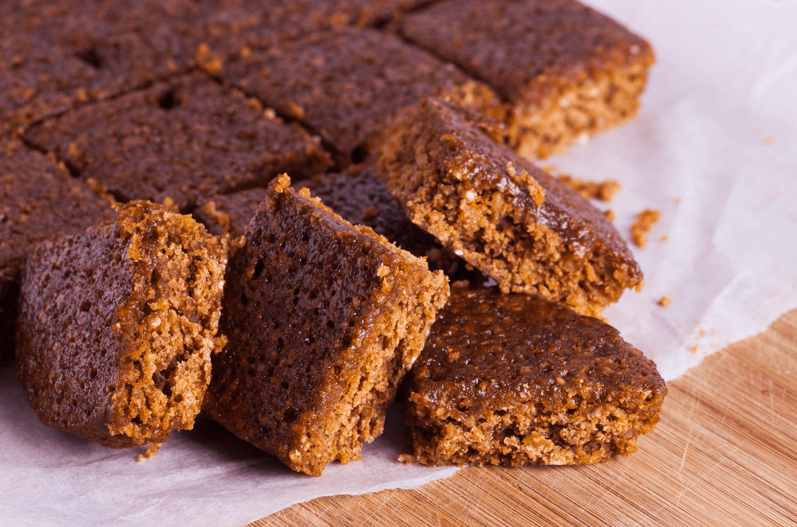

Parkin Cake

Description
Parkin cake is a traditional ginger cake from Yorkshire, flavored with molasses, oatmeal and warm spices.
Ingredients
- 8 oz/226g unsalted butter, softened
- 1 cup/350g golden syrup, or light corn syrup
- 1/2 cup/110g soft dark brown sugar
- 1/4 cup/80g black treacle or molasses
- 1 cup/113g self-rising flour
- 1/2 cup/50g medium oatmeal, or porridge oatmeal
- 4 tsp. ground ginger
- 2 tsp. nutmeg
- 1 tsp. pumpkin pie spice
- 1 tsp. baking powder
- 2 large eggs(beaten)
- 2 tbsp. milk
Steps
- Preheat the oven to 300°F/150°C. Grease a 9-inch square baking pan and line with parchment paper
- Stir together butter, sugar, 1/2 cup plus 1 tablespoon golden syrup, and molasses in a saucepan and cook over low heat, stirring constantly, until butter is melted and mixture is smooth, 4 to 5 minutes. Remove from heat and let mixture cool 5 minutes.
- Whisk flour, baking soda, and oats together in a large bowl. Stir in butter mixture. Add egg, then milk, and stir until well combined. Pour batter into prepared pan and spread evenly.
- Bake until a toothpick inserted into center comes out clean, about 1 hour 20 minutes. Remove from oven and let cool completely in pan, about 1 1/2 hours.
- Cover pan tightly with foil or plastic wrap, without letting it touch surface of cake, and let stand at room temperature for at least 1 day and up to 5. Cut into squares and serve.